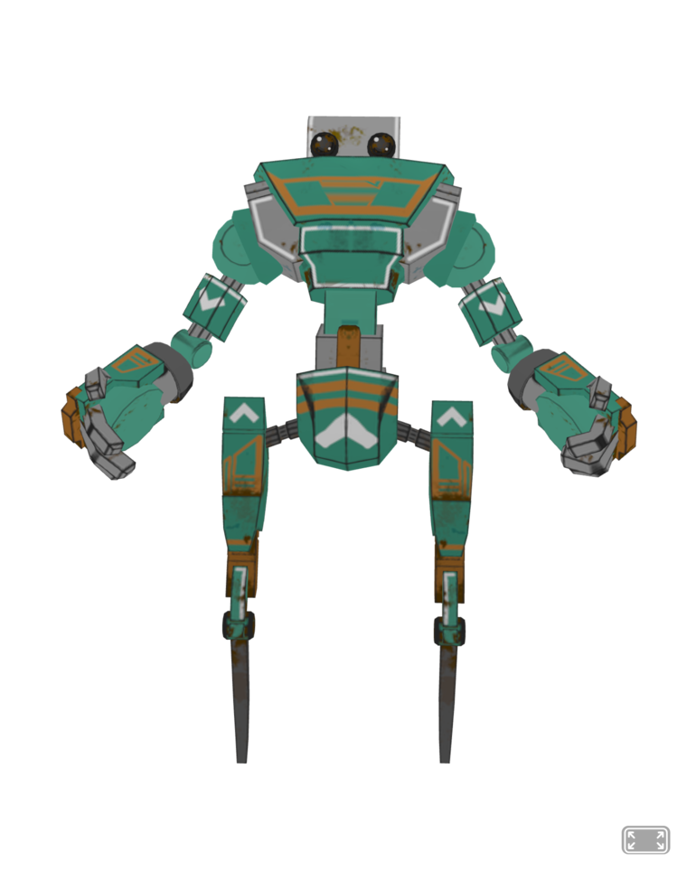

Ciencia ficción · Realidad Aumentada
Asimov — Círculo Vicioso
Las Tres Leyes de la Robótica y el bucle imposible del robot
Speedy
en Mercurio.
▶ INICIAR EXPERIENCIA
Permite la cámara y apunta al
marcador
(tarjeta / Hiro).
Sonido y narración incluidos.

Presentación
CONTINUAR ▸
Círculo Vicioso
🗣️
🔊
Apunta la cámara al marcador…
Historia
…